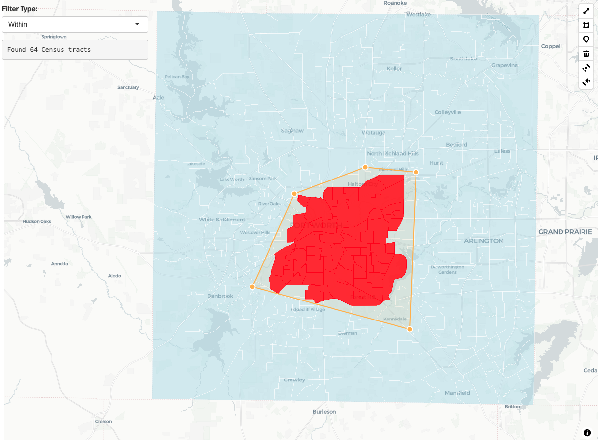

Why client-side geospatial analysis?
mapgl integrates turf.js v7.2.0 to bring powerful geospatial analysis directly to the browser. This means you can perform spatial operations like buffering, filtering, and overlay analysis without any server round-trips - making your Shiny applications much more responsive and reducing computational load on your server.
This is particularly valuable for deployed applications where you want users to interact with spatial data in real-time without waiting for server processing. Think interactive filtering, drawing tools that immediately show results, or exploratory analysis that responds instantly to user input.
Turf functions in mapgl support three input methods:
existing map layer or source references (layer_id), sf
objects (data), or raw coordinates when available - giving
you flexibility in how you structure your spatial workflows.
Buffering geometries
The turf_buffer() function creates buffer zones around
your features. This is useful for proximity analysis, creating catchment
areas, or adding visual emphasis around points of interest.
library(mapgl)
library(sf)
library(tigris)
options(tigris_use_cache = TRUE)
# Create a point for Texas Christian University
tcu <- st_sf(
name = "TCU",
geometry = st_sfc(st_point(c(-97.364, 32.708)), crs = 4326)
)
# Create a map with TCU and a 2-mile buffer
maplibre(style = carto_style("positron"),
center = c(-97.364, 32.708),
zoom = 11) |>
# TCU location
add_circle_layer(
id = "tcu",
source = tcu,
circle_color = "purple",
circle_radius = 8,
circle_stroke_color = "white",
circle_stroke_width = 2
) |>
# Create 2-mile buffer around TCU
turf_buffer(
layer_id = "tcu",
radius = 2,
units = "miles",
source_id = "tcu_buffer"
) |>
# Style the buffer
add_fill_layer(
id = "buffer_display",
source = "tcu_buffer",
fill_color = "purple",
fill_opacity = 0.2,
fill_outline_color = "purple"
)Spatial filtering with predicates
One of the most powerful features is turf_filter(),
which lets you filter features based on their spatial relationships.
This supports five spatial predicates:
- intersects: Features that overlap or touch
- within: Features completely inside others
- contains: Features that completely contain others
- crosses: Features that cross boundaries
- disjoint: Features that don’t touch at all
# Find Census tracts that intersect with TCU's 2-mile buffer
tarrant_tracts <- tracts("TX", "Tarrant", cb = TRUE)
maplibre(style = carto_style("positron")) |>
fit_bounds(tarrant_tracts) |>
# All Census tracts
add_fill_layer(
id = "all_tracts",
source = tarrant_tracts,
fill_color = "lightgray",
fill_opacity = 0.5,
fill_outline_color = "white"
) |>
# TCU buffer as filter geometry
turf_buffer(
data = tcu,
radius = 2,
units = "miles",
source_id = "tcu_buffer_filter"
) |>
# Find tracts that intersect with the buffer
turf_filter(
layer_id = "all_tracts",
filter_layer_id = "tcu_buffer_filter",
predicate = "intersects",
source_id = "intersecting_tracts"
) |>
# Highlight the results
add_fill_layer(
id = "intersects_result",
source = "intersecting_tracts",
fill_color = "red",
fill_opacity = 0.8
) |>
# Show TCU location
add_circle_layer(
id = "tcu_location",
source = tcu,
circle_color = "purple",
circle_radius = 10,
circle_stroke_color = "white",
circle_stroke_width = 3
) |>
add_fill_layer(
id = "buffer_display",
source = "tcu_buffer_filter",
fill_color = "purple",
fill_opacity = 0.2
) Note how we can chain together turf operations; the
layer_id argument supports either source or layer IDs in
your map, so you don’t necessarily need to visualize your sources before
using them for spatial analysis.
Interactive spatial filtering in Shiny
The real power of client-side spatial analysis shines in Shiny applications. Here’s a simple app that lets users draw polygons and instantly filter counties:
library(shiny)
library(mapgl)
library(sf)
library(tigris)
tarrant_tracts <- tracts(state = "TX", county = "Tarrant", cb = TRUE)
ui <- fluidPage(
maplibreOutput("map", height = "100vh"),
absolutePanel(
top = 10, left = 10,
selectInput("predicate", "Filter Type:",
choices = c("Intersects" = "intersects",
"Within" = "within",
"Contains" = "contains",
"Disjoint" = "disjoint"),
selected = "intersects"),
verbatimTextOutput("results")
)
)
server <- function(input, output, session) {
output$map <- renderMaplibre({
maplibre(style = carto_style("positron")) |>
fit_bounds(tarrant_tracts) |>
add_fill_layer(
id = "tracts",
source = tarrant_tracts,
fill_color = "lightblue",
fill_opacity = 0.5,
fill_outline_color = "white"
) |>
add_draw_control(position = "top-right")
})
# Real-time filtering when user draws
observeEvent(input$map_drawn_features, {
if (!is.null(input$map_drawn_features)) {
# Debounce slightly to allow the source to load
Sys.sleep(0.2)
maplibre_proxy("map") |>
turf_filter(
layer_id = "tracts",
filter_layer_id = "gl-draw-polygon-fill.cold",
predicate = input$predicate,
source_id = "filtered_tracts",
input_id = "filter_results"
) |>
add_fill_layer(
id = "filtered",
source = "filtered_tracts",
fill_color = "red",
fill_opacity = 0.8
)
}
})
output$results <- renderText({
if (!is.null(input$map_turf_filter_results)) {
paste("Found", length(input$map_turf_filter_results$result$features), "Census tracts")
}
})
}
shinyApp(ui, server)
Geometric operations
mapgl includes several geometric analysis functions for more advanced spatial workflows. Let’s create centroids for some Fort Worth area Census tracts and analyze their spatial patterns:
# Get a subset of tracts
fort_worth_tracts <- tarrant_tracts[1:10, ] # First 10 tracts for demo
maplibre(style = carto_style("positron")) |>
fit_bounds(fort_worth_tracts) |>
# Show the tract boundaries
add_fill_layer(
id = "tracts",
source = fort_worth_tracts,
fill_color = "lightgray",
fill_opacity = 0.3,
fill_outline_color = "white"
) |>
# Calculate geometric centroids
turf_centroid(
layer_id = "tracts",
source_id = "centroids"
) |>
# Calculate centers of mass (alternative centroid method)
turf_center_of_mass(
layer_id = "tracts",
source_id = "mass_centers"
) |>
# Create convex hull around centroids
turf_convex_hull(
layer_id = "centroids",
source_id = "hull"
) |>
# Create Voronoi polygons from centroids
turf_voronoi(
layer_id = "centroids",
source_id = "voronoi"
) |>
# Style the results
add_fill_layer(
id = "hull_display",
source = "hull",
fill_color = "blue",
fill_opacity = 0.2
) |>
add_line_layer(
id = "voronoi_lines",
source = "voronoi",
line_color = "purple",
line_width = 1
) |>
add_circle_layer(
id = "centroids_display",
source = "centroids",
circle_color = "red",
circle_radius = 6
) |>
add_circle_layer(
id = "mass_centers_display",
source = "mass_centers",
circle_color = "orange",
circle_radius = 4
)Note the difference between turf_centroid() (geometric
center) and turf_center_of_mass() (area-weighted center) -
they may differ for irregular polygons.
Overlay analysis
For more complex spatial analysis, you can combine multiple turf
operations. The turf_intersect() function returns the
actual intersection geometry - the overlapping area between
features:
# Create two overlapping buffer zones around different Fort Worth locations
downtown_fw <- st_sf(geometry = st_sfc(st_point(c(-97.3313, 32.7548)), crs = 4326)) # Downtown
cultural_district <- st_sf(geometry = st_sfc(st_point(c(-97.3632, 32.7494)), crs = 4326)) # Cultural District
maplibre(style = carto_style("positron"),
center = c(-97.3313, 32.7548), zoom = 12) |>
# Create overlapping buffers
turf_buffer(data = downtown_fw, radius = 1.5, units = "miles", source_id = "downtown_buffer") |>
turf_buffer(data = cultural_district, radius = 1.5, units = "miles", source_id = "cultural_buffer") |>
# Show original buffer areas
add_fill_layer(id = "downtown", source = "downtown_buffer", fill_color = "red", fill_opacity = 0.3) |>
add_fill_layer(id = "cultural", source = "cultural_buffer", fill_color = "blue", fill_opacity = 0.3) |>
# Calculate the intersection - returns the overlapping geometry
turf_intersect(
layer_id = "downtown_buffer",
layer_id_2 = "cultural_buffer",
source_id = "intersection_result"
) |>
# Show the intersection area
add_fill_layer(
id = "intersection",
source = "intersection_result",
fill_color = "green",
fill_opacity = 0.8
) We get a buffer “Venn diagram” that shows us areas near to each of the points of interest.
Available functions
mapgl currently supports these turf.js operations:
-
turf_buffer(): Create buffers around features -
turf_filter(): Filter features by spatial predicates -
turf_union(): Merge overlapping polygons -
turf_intersect(): Return intersection geometry between features -
turf_difference(): Subtract one geometry from another -
turf_convex_hull(): Create convex boundary around points -
turf_concave_hull(): Create fitted boundary around points -
turf_voronoi(): Generate Voronoi polygons from points -
turf_centroid(): Find centroids as mean of all object vertices -
turf_center_of_mass(): Alternative centroid method (will be more similar tosf::st_centroid()) -
turf_distance(): Calculate distances (Shiny only) -
turf_area(): Calculate areas (Shiny only)
Each function supports flexible input methods and integrates seamlessly with mapgl’s layer system, giving you powerful spatial analysis capabilities right in the browser.